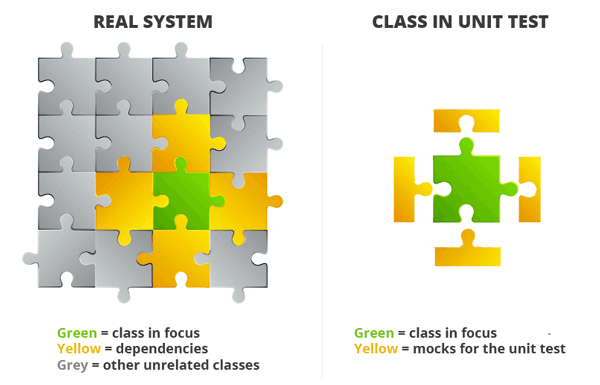

def test_simple():
# ARRANGE
a = 1
b = 2
# ACT
got = a + b
# ASSERT
assert got == 3
def test_very_simple():
assert 1 + 2 == 3Python - Tester avec les Doubles
Utiliser ←/→ ↑/↓ ␛ pour naviguer dans la présentation.
Pourquoi tester ?
Détecter automatiquement les régressions
Vérifier que le code est modulaire / facilement réutilisable
Permet de documenter
Structure d’un test
Arrange / Given ⇒ Pr√©paration des donn√©es d’entr√©e
Act / When ⇒ Appel de la m√©thode √† tester
Assert / Then ⇒ V√©rifications (retour, changement d’√©tat)
Structure d’un test
üí° Coder un max de fonctions pures !
Des entrées
Une sortie
On ne modifie pas les entrées
Pas d’effet de bord
✌ Très simples à tester
Framework de tests
pytest
unittest
üèÜ pytest : L√©ger, compatible, markers/fixtures/param√©trisation
Mais aussi doctest, hypothesis …
Dans la vraie vie …
Effets de bord
Commande système
File System
Connexion à une base de données
Dépendances

Entrées complexes
Retour d’une API (DataScience, Base de donn√©es…)
Pas de constructeur
Structure d’un test avec Double
Arrange / Given ⇒ Pr√©paration des donn√©es d’entr√©e et des doubles
Act / When ⇒ Appel de la m√©thode √† tester
Assert / Then ⇒ V√©rifications (appels de m√©thode)
Les Doubles ü¶Ñü¶Ñ
Dummies ~ Nulles
Valeurs non utilisées par le code. Elles permettent de remplir les paramètres des méthodes à tester.
# Source
def do_some_stuff(param1, param2):
if param1 == 42:
return False
# ...
if param2 % param1 == 5:
return True
return None
# Test
def test_dummies():
dummy = None
assert not do_some_stuff(42, dummy)Stubs ~ Bout, moignon
Objet qui produit les réponses dont on a besoin pour faire passer le test.
# Source
import math
def get_cosinus(x):
return math.cos(x)
# Test
def test_stubs_math_cos(monkeypatch):
def stub_cos(*args, **kwargs):
return args[0]
monkeypatch.setattr(math, 'cos', stub_cos)
assert get_cosinus(5) == 5Mocks ~ ü§° / Spies ~ Espions
Objet type proxy qui enregistre s’il a √©t√© appel√© et avec quels param√®tres.
Un Mock est une coquille vide qui ne retourne rien.
Un Spy appelle le code de l’objet qu’il remplace. On ne surcharge que certaines m√©thodes.
Fake objects ~ Faux, truqués
Objet remplaçant la dépendance avec une implémentation fonctionnelle mais qui ne sera pas utilisée en production.
Exemple : Base de données en mémoire
Framework de Doubles
mock ~ unittest.mock (dispo pour python >= 3.3)
monkeypatch
Récap
Replacement des dépendances | Vérification des interactions |
Dummies | Spy |
Stubs | Mock |
Fakes |
Complexité

Limites
On ne teste pas l’int√©gration des composants
Compliqué à écrire si de nombreuses dépendances
Maintenance tr√®s co√ªteuse (tous les mocks √† r√©√©crire si l’API change)
Certains cas ne se produiront pas en production
Références
Des questions ?
Merci pour votre attention.